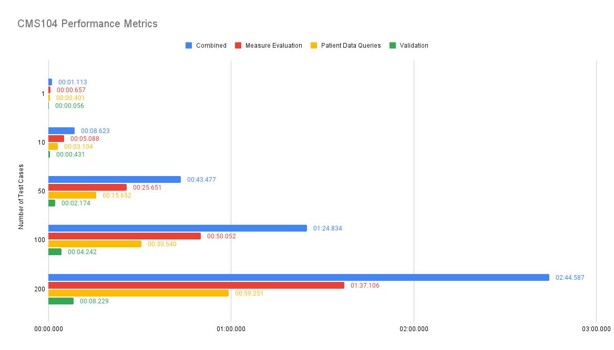

CMS FHIR Prototype Measure Calculation Tool IG
0.1.0 - CI Build

CMS FHIR Prototype Measure Calculation Tool IG
0.1.0 - CI Build

CMS FHIR Prototype Measure Calculation Tool IG - Local Development build (v0.1.0). See the Directory of published versions
This page documents the test plan for the Measure Calculation Tool (MCT) prototype. The test plan is intended to demonstrate:
Test data was prepared by constructing random datasets based on the data requirements for the specific measure under test. Although this is a reasonable approach to functional testing, it is not necessarily representative of real-world test data. Additional testing should be performed using:
Whenever possible, automated testing approaches should be used to enable more streamlined testing of the measure calculation tool. For tests that are intended to demonstrate functionality of the prototype, this automation can be accomplished using continuous integration and delivery pipelines. For tests that are intended to demonstate validity and capability of an integration, this automation can be accomplished through integration testing tools such as Postman.
These tests are performed as part of prototype development and testing to ensure that the measure content for the Validation Measure and for CMS104 is correctly evaluating given known input data.
NOTE: These tests cover proportion measure calculation only. Other calculation features would need to be tested specifically, including: ratio, continuous-variable, and composite calculation and stratifiers.
NOTE: The content unit tests are all patient-specific, rather than population level. Population level testing is performed as part of integration tests.
The Validation/Certification measure contains expressions to support validation of all QICore profiles. However, this prototype is focusing on the data elements involved in the CMS104 Measure:
These tests are performed as part of prototype development and testing to ensure that the Measure Calculation Tool is performing as expected in the prototype environment with known configuration and input data served through expected server behavior.
These tests are performed at an implementing site to ensure that the prototype is installed and configured correctly and that it performs as expected within the site environment.
These tests are performed at an implementing site to demonstrate calculation and submission of the CMS104 measure.
These tests are performed as part of prototype development and testing and provide baseline performance characteristics in a known solution environment.
The following is an analysis of the measure evaluation performance of the prototype using the CMS104 measure as the subject. For this analysis, the following three processes will be profiled:
The first step of gathering the patient data includes an analysis of the data requirements for the measure. The data requirements identify the resources and data elements used to evaluate the measure logic. The prototype uses the data requirements to generate FHIR REST queries, which are then executed across the specified facilities registered with an organization.
The data validation step operates on the gathered patient data to ensure that the data adheres to a specified set of profiles (in this case QiCore version 4.1.1). Inconsistencies with the gathered patient data and the specified profiles are documented within the patient data as contained resources. Any missing data requirements will also be documented within the returned patient data bundle (see the $gather operation specification for more information).
The measure evaluation occurs on both a patient-level and population-level. The prototype is testing a proportion measure. The result of the evaluation returns individual and population reports detailing population group membership, a measure score, and the resources that were used during evaluation.
The prototype operates on a linear scale. Meaning each of the processes outlined above are evaluated sequentially for each patient. Therefore, as the population or resources within that population (i.e. patients and/or patient resources) increase, the time to evaluate will also increase.
The prototype was profiled using populations sizes of 1, 10, 50, 100, and 200 patients (test cases) in order to provide a reasonable representation of the linear scaling and represent several measure population groupings (i.e. simulate a real-world population). The patient data is randomly generated with adherence to certain requirements. The requirements include:
Each population set was randomly generated 100 times and profiled recording the average runtime for each process in the following table.
| Number of Test Cases | Combined | Measure Evaluation | Patient Data Queries | Validation |
|---|---|---|---|---|
| 1 | 01.113 | 00.657 | 00.401 | 00.056 |
| 10 | 08.623 | 05.088 | 03.104 | 00.431 |
| 50 | 43.477 | 25.651 | 15.652 | 02.174 |
| 100 | 01:24.834 | 50.052 | 30.540 | 04.242 |
| 200 | 02:44.587 | 01:37.106 | 59.251 | 08.229 |

The following chart displays the runtime distribution for each of the profiled processes:
Although the prototype could be implemented as-is and perform reasonably well for smaller populations, it is not currently recommended as an enterprise-level solution. In order to scale the prototype for enterprise use, there are several enhancements that could be implemented to improve the overall performance and user experience including, but not limited to:
The following table outlines example test cases for each measure population group and the expected result the prototype should produce.
| Population Group | Test Case | Expected Result |
|---|---|---|
| Ineligible | Ineligible Test Bundle | Ineligible Result |
| Initial Population | Initial Population Test Bundle | Initial Population Result |
| Denominator | Denominator Test Bundle | Denominator Result |
| Denominator Exception | Denominator Exception Test Bundle | Denominator Exception Result |
| Denominator Exclusion | Denominator Exclusion Test Bundle | Denominator Exclusion Result |
| Numerator | Numerator Test Bundle | Numerator Result |
The following table provides larger test data sets to provide facility-level testing. Two facilities are provided to facilitate both single-facility report testing and aggregate report testing
| Facility | Test Bundle | Expected Result |
|---|---|---|
| Facility A | Facility A Bundle | Facility A Result |
| Facility B | Facility B Bundle | Facility B Result |
| Facility A & Facility B | Aggregate Result |